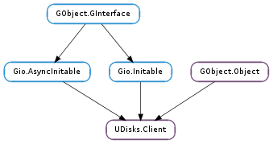

| Name | Type | Flags | Description |
|---|---|---|---|
| manager | UDisks.Manager | r | The UDisks.Manager |
| object-manager | Gio.DBusObjectManager | r | The Gio.DBusObjectManager used by the UDisks.Client |
| Name | Parameters | Return | Description |
|---|---|---|---|
| changed | This signal is emitted either when an object or interface is added or removed a when property has changed. Additionally, multiple received signals are coalesced into a single signal that is rate-limited to fire at most every 100ms. Note that calling UDisks.Client.settle () will cause this signal to fire if any changes are outstanding. For greater detail, connect to the Gio.DBusObjectManager ::object-added, Gio.DBusObjectManager ::object-removed, Gio.DBusObjectManager ::interface-added, Gio.DBusObjectManager ::interface-removed, Gio.DBusObjectManagerClient ::interface-proxy-properties-changed and signals on the UDisks.Client :object-manager object. |
Bases: GObject.Object, Gio.AsyncInitable, Gio.Initable
UDisks.Client is used for accessing the UDisks service from a client program.
| Parameters: |
|
|---|
Asynchronously gets a UDisks.Client. When the operation is finished, callback will be invoked in the thread-default main loop of the thread you are calling this method from.
| Parameters: | res (Gio.AsyncResult) – A Gio.AsyncResult. |
|---|---|
| Raises: | GLib.GError |
| Returns: | A UDisks.Client or None if error is set. Free with GObject.Object.unref () when done with it. |
| Return type: | UDisks.Client |
Finishes an operation started with UDisks.Client.new ().
| Parameters: | cancellable (Gio.Cancellable or None) – A Gio.Cancellable or None. |
|---|---|
| Raises: | GLib.GError |
| Returns: | A UDisks.Client or None if error is set. Free with GObject.Object.unref () when done with it. |
| Return type: | UDisks.Client |
Synchronously gets a UDisks.Client for the local system.
| Parameters: | raid (UDisks.MDRaid) – A UDisks.MDRaid. |
|---|---|
| Returns: | A list of UDisks.Block instances. The returned list should be freed with GLib.List.free () after each element has been freed with GObject.Object.unref (). |
| Return type: | [UDisks.Block] |
Gets all RAID devices (e.g. /dev/md0 and /dev/md1) for raid.
This is usually only useful in split-brain situations — see UDisks.Client.get_block_for_mdraid () for an example — and is normally used only to convey the problem in an user interface.
| Parameters: | block_device_number (int) – A #dev_t to get a UDisks.Block for. |
|---|---|
| Returns: | A UDisks.Block or None if not found. |
| Return type: | UDisks.Block |
Gets the UDisks.Block corresponding to block_device_number, if any.
| Parameters: |
|
|---|---|
| Returns: | A UDisks.Block or None if the requested kind of block device is not available - use GObject.Object.unref () to free the returned object. |
| Return type: |
Gets a block device corresponding to drive. The returned block device, if any, is for the whole disk drive, e.g. a partition block device is never returned.
Set get_physical to True if you need a block device that you can send low-level SCSI commands with (for multipath, this returns one of the physical paths). Set it to False if you need a block device that you can read/write data with (for multipath, this returns the mapped device).
| Parameters: | label (str) – The label. |
|---|---|
| Returns: | A list of UDisks.Block instances. The returned list should be freed with GLib.List.free () after each element has been freed with GObject.Object.unref (). |
| Return type: | [UDisks.Block] |
Gets all the UDisks.Block instances with the given label, if any.
| Parameters: | raid (UDisks.MDRaid) – A UDisks.MDRaid. |
|---|---|
| Returns: | A UDisks.Block or None if no RAID device is running. |
| Return type: | UDisks.Block |
Gets the RAID device (e.g. /dev/md0) for raid.
In the case of a split-brain syndrome, it is undefined which RAID device is returned. For example this can happen if /dev/sda and /dev/sdb are components of a two-disk RAID-1 and /dev/md0 and /dev/md1 are two degraded arrays, each one using exactly one of the two devices. Use UDisks.Client.get_all_blocks_for_mdraid () to get all RAID devices.
| Parameters: | uuid (str) – The uuid. |
|---|---|
| Returns: | A list of UDisks.Block instances. The returned list should be freed with GLib.List.free () after each element has been freed with GObject.Object.unref (). |
| Return type: | [UDisks.Block] |
Gets all the UDisks.Block instances with the given uuid, if any.
| Parameters: | block (UDisks.Block) – A UDisks.Block. |
|---|---|
| Returns: | A UDisks.Block or None. Free with GObject.Object.unref () when done with it. |
| Return type: | UDisks.Block |
If block is an unlocked encrypted device, gets the cleartext device.
| Parameters: | block (UDisks.Block) – A UDisks.Block. |
|---|---|
| Returns: | A UDisks.Drive or None if there is no UDisks.Drive for block - free the returned object with GObject.Object.unref (). |
| Return type: | UDisks.Drive |
Gets the UDisks.Drive that block belongs to, if any.
| Parameters: | drive (UDisks.Drive) – A UDisks.Drive. |
|---|---|
| Return type: | out_name: str, out_description: str, out_drive_icon: Gio.Icon, out_media_description: str, out_media_icon: Gio.Icon |
Gets information about a UDisks.Drive object that is suitable to present in an user interface. The returned strings are localized.
| Parameters: | drive (UDisks.Drive) – A UDisks.Drive. |
|---|---|
| Returns: | A list of UDisks.Drive instances. The returned list should be freed with GLib.List.free () after each element has been freed with GObject.Object.unref (). |
| Return type: | [UDisks.Drive] |
Gets all siblings for drive.
| Parameters: | |
|---|---|
| Returns: | A string that should be freed with GLib.free (). |
| Return type: |
Gets a human readable localized string for usage, type and version.
| Parameters: | job (UDisks.Job) – A UDisks.Job. |
|---|---|
| Returns: | A string that should be freed with GLib.free (). |
| Return type: | str |
Gets a human-readable and localized text string describing the operation of job.
For known job types, see the documentation for the Job :Operation D-Bus property.
| Parameters: | object (UDisks.Object) – A UDisks.Object. |
|---|---|
| Returns: | A list of UDisks.Job instances. The returned list should be freed with GLib.List.free () after each element has been freed with GObject.Object.unref (). |
| Return type: | [UDisks.Job] |
Gets all the UDisks.Job instances that reference object, if any.
| Parameters: | block (UDisks.Block) – A UDisks.Block. |
|---|---|
| Returns: | A UDisks.Loop or None. Free with GObject.Object.unref (). |
| Return type: | UDisks.Loop |
Gets the corresponding loop interface for block.
This only works if block itself is a loop device or a partition of a loop device.
| Returns: | A UDisks.Manager or None if the udisksd daemon is not currently running. Do not free, the instance is owned by client. |
|---|---|
| Return type: | UDisks.Manager |
Gets the UDisks.Manager interface on the well-known /org/freedesktop/UDisks2/Manager object.
| Parameters: | block (UDisks.Block) – A UDisks.Block. |
|---|---|
| Returns: | A UDisks.MDRaid or None if there is no UDisks.MDRaid for block or block is not a MD-RAID block device. Free the returned object with GObject.Object.unref (). |
| Return type: | UDisks.MDRaid |
Gets the UDisks.MDRaid that block is the block device for, if any.
| Parameters: | media_compat (str) – An array of media types. |
|---|---|
| Returns: | A string that should be freed with GLib.free () or None if unknown. |
| Return type: | str |
Gets a human-readable string of the media described by media_compat. The returned information is localized.
| Parameters: | raid (UDisks.MDRaid) – A UDisks.MDRaid. |
|---|---|
| Returns: | A list of UDisks.Block instances. The returned list should be freed with GLib.List.free () after each element has been freed with GObject.Object.unref (). |
| Return type: | [UDisks.Block] |
Gets the physical block devices that are part of raid.
| Parameters: | object_path (str) – Object path. |
|---|---|
| Returns: | A UDisks.Object corresponding to object_path or None if not found. The returned object must be freed with GObject.Object.unref (). |
| Return type: | UDisks.Object |
Convenience function for looking up an UDisks.Object for object_path.
| Parameters: | object (UDisks.Object) – A UDisks.Object. |
|---|---|
| Returns: | A UDisks.ObjectInfo instance that should be freed with GObject.Object.unref (). |
| Return type: | UDisks.ObjectInfo |
Gets information about a UDisks.Object instance that is suitable to present in an user interface. Information is returned in the UDisks.ObjectInfo object and is localized.
| Returns: | A Gio.DBusObjectManager. Do not free, the instance is owned by client. |
|---|---|
| Return type: | Gio.DBusObjectManager |
Gets the Gio.DBusObjectManager used by client.
| Parameters: | partition (UDisks.Partition) – # UDisks.Partition. |
|---|---|
| Returns: | A string that should be freed with GLib.free (). |
| Return type: | str |
Gets information about partition that is suitable to present in an user interface in a single line of text.
The returned string is localized and includes things like the partition type, flags (if any) and name (if any).
| Parameters: | partition (UDisks.Partition) – A UDisks.Partition. |
|---|---|
| Returns: | A UDisks.PartitionTable. Free with GObject.Object.unref (). |
| Return type: | UDisks.PartitionTable |
Gets the UDisks.PartitionTable corresponding to partition.
| Parameters: | |
|---|---|
| Returns: | A description of partition_table_type and partition_table_subtype or None. |
| Return type: |
Gets a human readable localized string for partition_table_type and partition_table_subtype.
| Parameters: | partition_table_type (str) – A partition table type e.g. ‘dos’ or ‘gpt’. |
|---|---|
| Returns: | A None-terminated array of strings. Only the container should be freed with GLib.free (). |
| Return type: | [str] |
Gets all known subtypes for partition_table_type.
| Parameters: | partition_table_type (str) – A partition table type e.g. ‘dos’ or ‘gpt’. |
|---|---|
| Returns: | A description of partition_table_type or None. |
| Return type: | str |
Gets a human readable localized string for partition_table_type.
| Parameters: | |
|---|---|
| Returns: | A description of partition_type or None if unknown. |
| Return type: |
Like UDisks.Client.get_partition_type_for_display () but also takes the partition table subtype into account, if available. This is useful in scenarios where different subtypes is using the same partition type.
| Parameters: | |
|---|---|
| Returns: | A description of partition_type or None if unknown. |
| Return type: |
Gets a human readable localized string for partiton_table_type and partition_type.
| Parameters: | |
|---|---|
| Returns: | A list of UDisks.PartitionTypeInfo instances. The returned list should be freed with GLib.List.free () after freeing each element with UDisks.PartitionTypeInfo.free (). |
| Return type: |
Gets information about all known partition types for partition_table_type and partition_table_subtype.
| Parameters: | table (UDisks.PartitionTable) – A UDisks.PartitionTable. |
|---|---|
| Returns: | A list of UDisks.Partition instances. The returned list should be freed with GLib.List.free () after each element has been freed with GObject.Object.unref (). |
| Return type: | [UDisks.Partition] |
Gets all partitions of table.
| Parameters: | |
|---|---|
| Returns: | A string that should be freed with GLib.free (). |
| Return type: |
Utility function to get a human-readable string that represents size.
| Parameters: | object_path (str) – Object path. |
|---|---|
| Returns: | A UDisks.Object corresponding to object_path or None if not found. |
| Return type: | UDisks.Object |
Like UDisks.Client.get_object () but doesn’t increase the reference count on the returned UDisks.Object.
The returned object is only valid until removed so it is only safe to use this function on the thread where client was constructed. Use UDisks.Client.get_object () if on another thread.
Queues up a UDisks.Client ::changed signal and rate-limit it. See the documentation for the UDisks.Client ::changed property for more information.
Blocks until all pending D-Bus messages have been delivered. Also emits the (rate-limited) UDisks.Client ::changed signal if changes are currently pending.
This is useful in two situations: 1. when using synchronous method calls since e.g. D-Bus signals received while waiting for the reply are queued up and dispatched after the synchronous call ends; and 2. when using asynchronous calls where the return value references a newly created object (such as the Manager.LoopSetup() method).